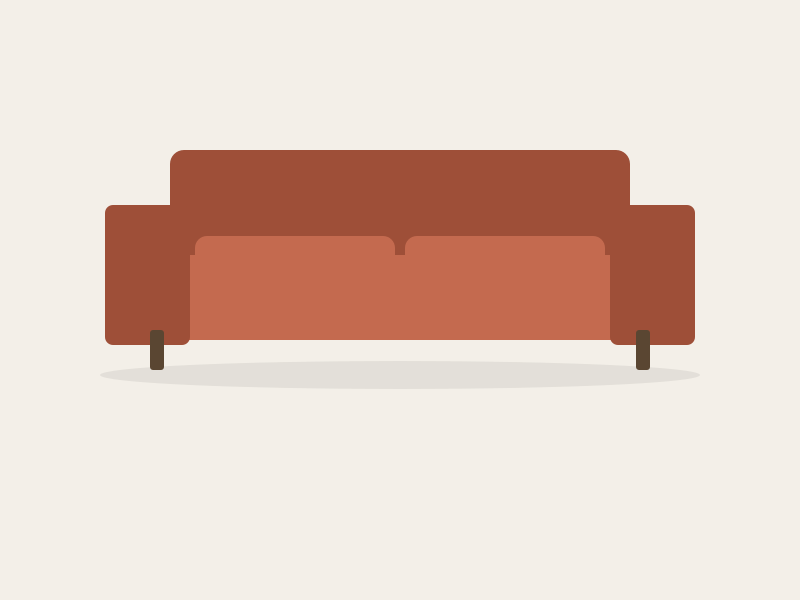
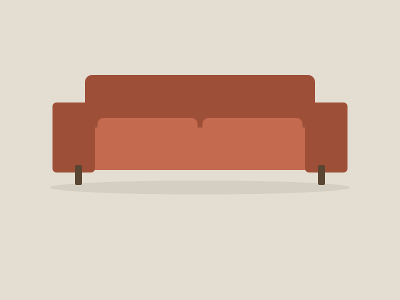

Sofa
Oslo 2-Seater Sofa
€1,290.00
Item no. NH-1004
Compact and upright, with slim arms and tapered legs. Ideal for small apartments and reading corners.
Dimensions
- Width: 176 cm
- Depth: 86 cm
- Height: 80 cm
- Seat height: 46 cm
Material & Construction
- Frame: solid birch
- Suspension: no-sag springs
- Upholstery: linen blend, terracotta
- Legs: powder-coated steel
Features & Feel
- Firm, upright seat
- Natural, slightly textured linen feel
- Removable seat cushion covers